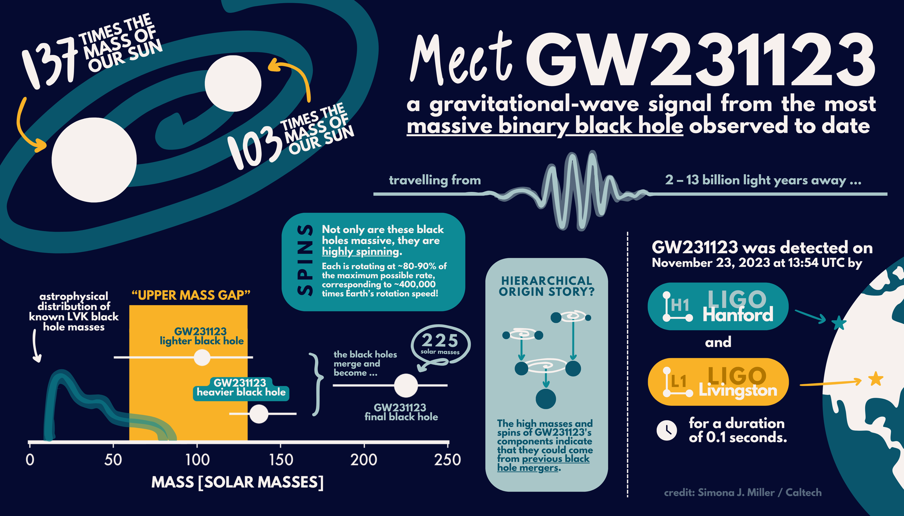
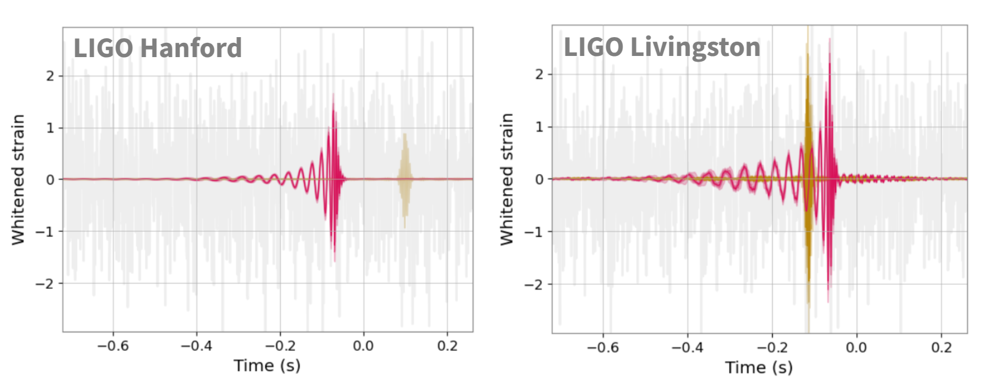
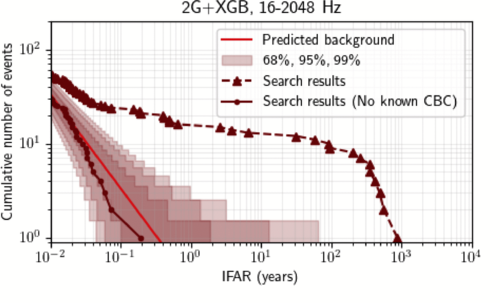
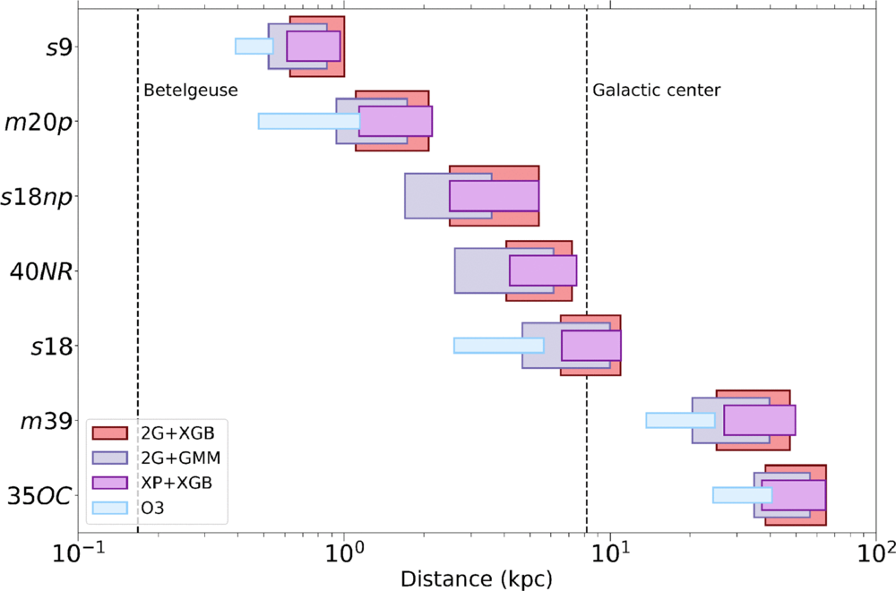

Research
Work in progress


Intermediate-mass black holes
On November 23, 2023, the LIGO-Virgo-KAGRA (LVK) Collaboration detected GW231123, a gravitational-wave signal consistent with the merger of two black holes with the highest combined mass the LVK Collaboration has ever observed. These black holes would have been spinning incredibly fast, and their individual masses appear to fall into a range that challenges existing theories about how massive stars evolve and end their lives.
The formation scenario and waveform model systematics sparked an exciting debate in the scientific community!
I served as paper manager of the LVK publication, and presented this observation for the first time to the scientific community at the Amaldi/GR conference in July 2025. Together with the summer student Krzysztof Król, I further investigated waveform systematics and the impact of Gaussian noise on the interpretation of signals similar to GW231123, showing for the first time that the model systematics observed in GW231123 are expected.
Find out more:
Robust inference of the source properties of merging black holes
Once a GW signal is detected, its source properties are measured by comparing models of the GW signal to the GW data in a Bayesian framework. Measuring the properties of merging black holes is fundamental to characterizing the population of compact binaries and understanding their formation channels.
Unfortunately, gravitational-wave data also contain noise transients, called glitches, caused by the instruments themselves and their interactions with the environment. When glitches overlap with transient GW signals, they can significantly bias the inference of their source properties, especially the black-hole spins and the orbital eccentricity. I am responsible for the mitigation of glitches overlapping with GW signals for the LVK catalogs (GWTC-5, GWTC-6, and GWTC-7).


Find out more:
Detecting gravitational waves
To identify astrophysical signals embedded in detector noise, there are two main approaches: template-based searches, which assume knowledge of the GW signals, and model-independent searches, which do not assume a waveform model but look for excess power that is coherent across multiple GW detectors. Model-independent searches are fundamental to observe GWs from, for example, the coalescence of peculiar (e.g., highly precessing or eccentric) compact binaries, core-collapse supernovae, and cosmic strings, for which the availability of signal models is limited.
My contributions include the development of novel machine-learning techniques, such as autoencoders and decision trees, to improve noise rejection and increase the detection sensitivity. I deployed such methods into the existing search pipeline Coherent WaveBurst, and contributed significantly to analyzing LIGO and Virgo data. Moreover, I led the waveform-consistency test included in the LVK catalogs GWTC-4 and GWTC-5, where theoretical models of the GW signals are compared to waveforms reconstructed with minimal assumptions to identify potential discrepancies that may reveal new physics.




Find out more: